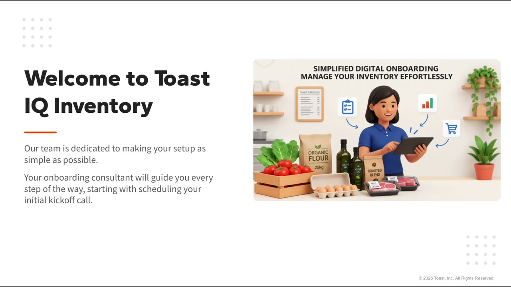
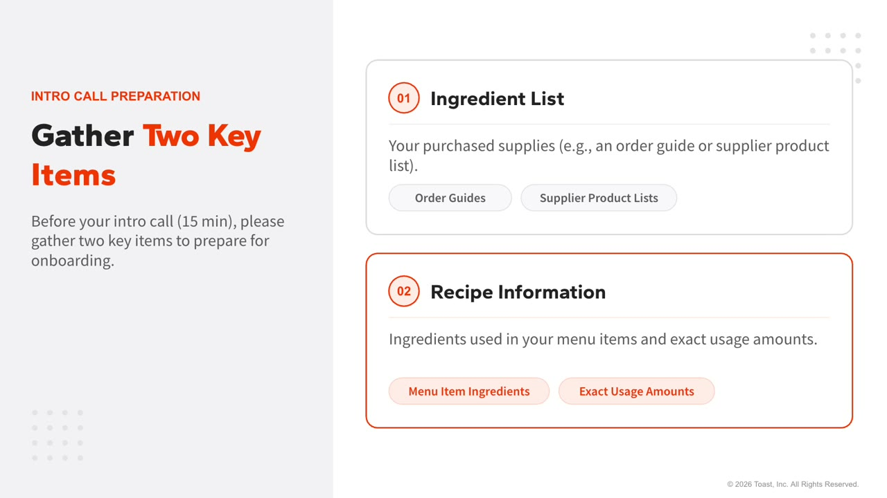
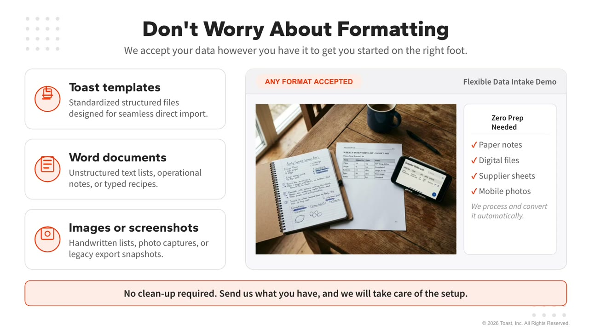
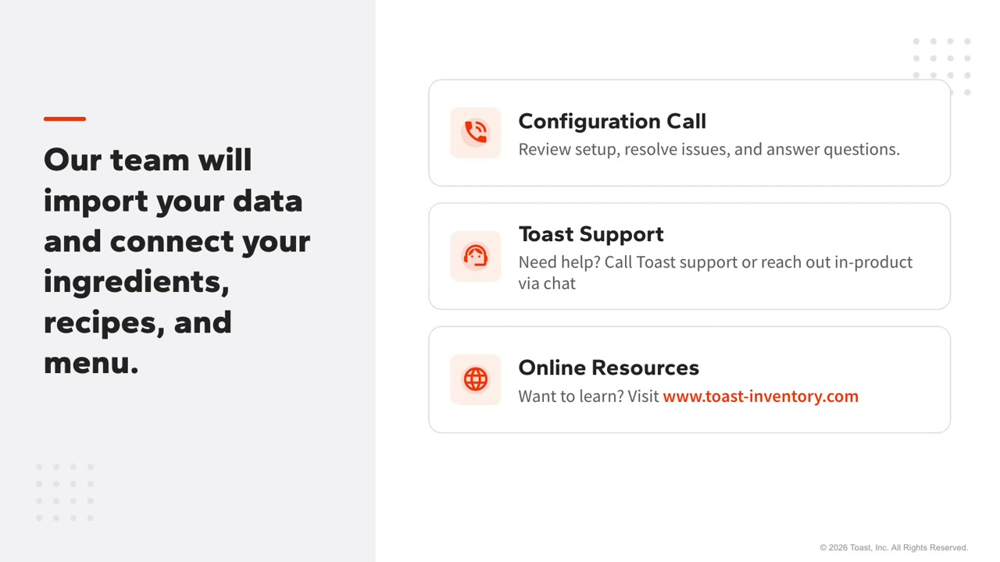

A step-by-step look at how onboarding works, and what to prepare before your first call.
Your onboarding consultant guides you every step of the way. They start by scheduling an intro call with you (about 15 minutes).

Your onboarding consultant will schedule your initial kickoff call.
Before the intro call, collect:

Ingredient list and recipe information are all you need to prepare.
Your information doesn't need to be in a specific format. Recipe spreadsheets, recipe cards, supplier files, or exports from another system all work.
Toast templates, Word documents, and images or screenshots are all accepted. If it helps, we can provide a standard template.

Accepted formats: Toast templates, Word documents, images or screenshots.
Once we have your information, the team imports it into Toast IQ Inventory, connecting your ingredients, recipes, and menu.
Next, we schedule a configuration call to review your setup together, answer questions, and show you where to go from here.

After the import: a configuration call, Toast Support, and online resources.
Once you're up and running, support is always within reach. Call Toast support or reach out in-product via chat, and visit toast-inventory.com anytime for quick videos on the core parts of Toast IQ Inventory.